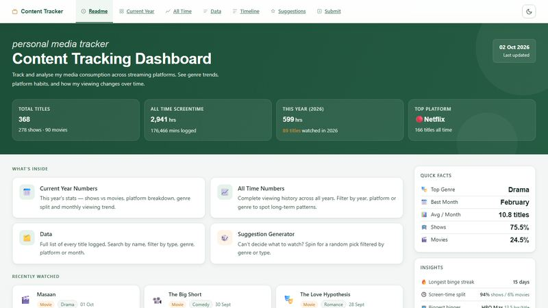
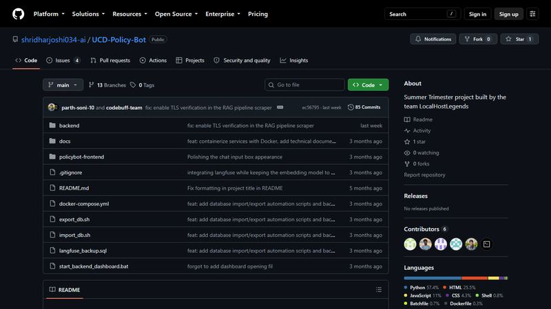
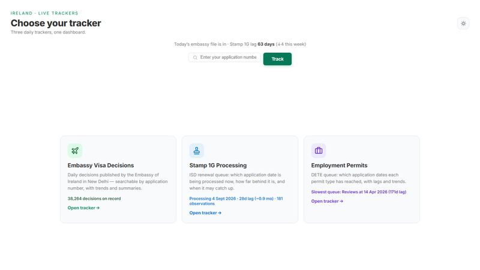
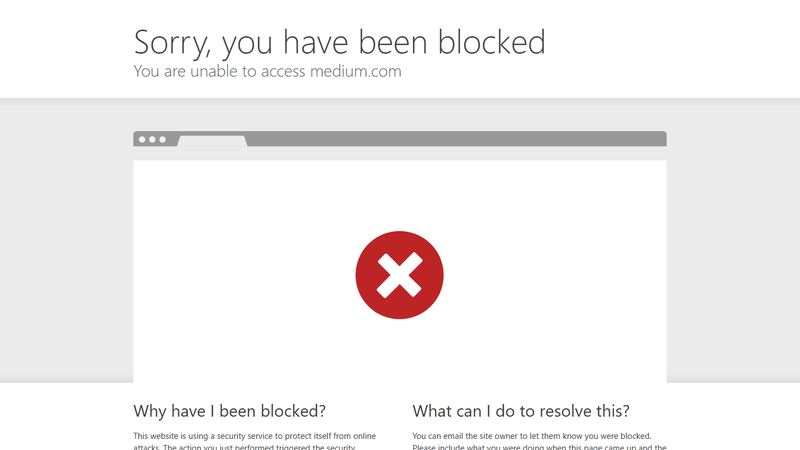
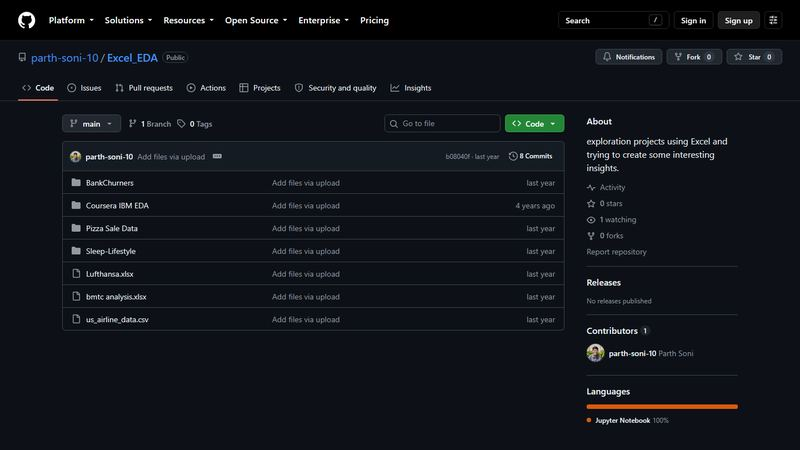
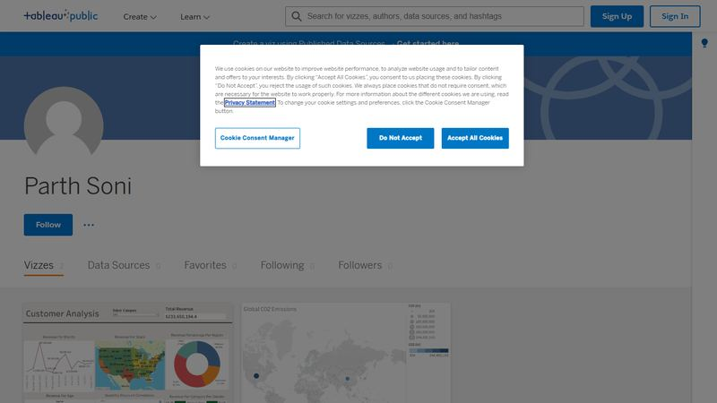
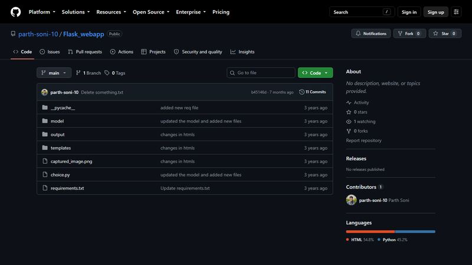

Data Analyst • Dublin, Ireland
Making data speak clearly.
From raw CSV files to boardroom-ready dashboards. I translate complexity into clarity, and numbers into decisions.
Profile: Parth Shirish Soni
University College Dublin • 2025-2026
“Data is only as powerful as the story it tells.”
Connect: Parth Soni
GitHub: @parth-soni-10
Building data tools in public
… contributions in the last year
Python, SQL & dashboard projects, from F1 telemetry pipelines to live-scraping trackers. … repos • … followers
01About
Driven
by Data.
Hey, I’m Parth 👋. Data Analyst in the making. Storyteller at heart. I’m currently pursuing my MSc in Computer Science (Negotiated Learning) at University College Dublin 🎓, and my mission is simple: take messy, chaotic data and turn it into something that actually means something.
I live in the space between spreadsheets and strategy, building dashboards, writing queries, and connecting dots that others miss. If there’s a pattern hiding in the noise, I’ll find it.
Three words own my weekends: Formula 1. Tennis. Counter-Strike. Whether it’s dissecting a pit-stop strategy, tracking a Grand Slam run, or watching a clutch round unfold. Sports aren’t just entertainment for me, they’re data in motion.
Certified avgeek and general machine enthusiast 🏍️✈️. Planes, trains, bikes, cars: if it’s made of metal and it moves, I’m already fascinated. And when I’m not doing any of that? Colour-coded folders, sci-fi binges 🚀, and the quiet satisfaction of a perfectly cleaned dataset.
Writing on Medium
I publish F1 race weekend breakdowns and sharp, data-driven insights for fellow fans. Every qualifying, every race, every Monday debrief.
2025-2026
MSc Computer Science
University College Dublin, Ireland
Data Analytics, ML, Python, SQL, Power BI
2019-2023
B.Tech Computer Science & Engineering
Dayananda Sagar University, Bengaluru
CGPA: 8.15, Programming, Databases, Data Science
02Experience
Professional
Experience
02 roles
ANKO (KAS Services)
Inventory Analyst, Intern
- Handled execution, deployment, and monitoring of key supply chain metrics for a new division of products with a weekly sales revenue of ~1.8 million AUD.
- Analyzed demand trends and optimized inventory planning to ensure timely product availability during peak periods like Mother’s Day, Anzac Day, and Christmas.
- Collaborated with cross-functional teams to determine that an average 15% increase in inventory was needed to meet demand and prevent stockouts.
- Performed shrinkage analysis to identify inefficiencies in the supply chain; implemented corrective measures that reduced shrinkage by 7% and helped minimize stockouts, driving profitability.
- Built monitoring systems for real-time stock and business metric visibility across the division.
Nokia
Technical Writer, Intern
- Streamlined and redesigned over 70 key product documents and graphics as part of the company rebranding, incorporating new brand elements to create visually compelling marketing collateral.
- Created 3 comprehensive user manuals for new products from scratch by collaborating closely with the R&D team; supported the development of installation guides and troubleshooting documentation.
- Played a key role in developing visually rich images, diagrams, and infographics to enhance the clarity of complex technical concepts.
- Replaced 2 GIFs as part of the rebranding initiative, updated imagery in over 25 product guides, and implemented weekly revisions based on R&D input.
03Projects
Selected Projects
08 worksContent Tracking Dashboard
Live • 2024-Current
Built an end-to-end personal media analytics dashboard using HTML, CSS, JavaScript, Google Sheets API, and Apps Script to analyse 369+ titles, transforming raw viewing logs into interactive dashboards with calculated KPIs, derived metrics, YoY comparisons, dynamic filtering, and interactive visualisations across six analytics pages, without a traditional backend or external frameworks.
UCD PolicyBot
May-Aug 2026
RAG chatbot running 100% locally: BGE-M3 embeddings (dense + lexical) stored in a Qdrant vector database feed a Qwen2.5-1.5B SLM served by Ollama — the lowest-latency pick from four stress-tested local models — to answer UCD academic and admin policy questions, with mandatory citation (URL + page number) and answers grounded in retrieved context (the model abstains when the docs do not support an answer). Built a scraping and parsing pipeline with BeautifulSoup, markdownify, and PyMuPDF (pymupdf4llm) to convert 200+ policy docs to structured Markdown, preserving hierarchical structure for downstream vector indexing. Automated dedup and validation checks cut malformed records by ~30% and pushed retrieval precision above 80%.
Irish Visa Decision Tracker
Live • Personal Project
Tracks visa decisions published daily by the Embassy of Ireland, New Delhi, turning a flat daily spreadsheet (no history, no search, no trends) into a searchable, browsable dashboard. A GitHub Actions scraper runs 4× daily to fetch the embassy’s ‘.ods’ file, handle weekends and public holidays gracefully, and upsert records into a Google Sheet (the database). The Apps Script Web App exposes a clean HTTP API read by the four-tab Netlify dashboard: live snapshot, daily summary, full history with date-picker, and a suggestions form.
Formula 1 Telemetry Analysis
Live • Jan 2026-Present
Built an end-to-end telemetry analytics pipeline using Python, FastF1, pandas, and NumPy to collect, clean, transform, and analyse race telemetry across the 2026 Formula 1 season, publishing weekly data-driven performance reports. Developed 9+ visualisation types including lap-time evolution, tyre strategy analysis, minisector dominance, cumulative lap delta, and sector performance, translating complex datasets into audience-friendly visual stories through 10+ published articles on Medium.
Excel & Python EDA

Cleaned and analysed seven real-world datasets — bank churn, US airline on-time performance, Bangalore BMTC transit, pizza sales, sleep health, Lufthansa, and an IBM Coursera fleet inventory — in Excel and pandas, fixing missing values, outliers, and type mismatches before touching a chart. Tableau charts surface the correlations worth reporting; every workbook and notebook lives in the repo.
Interactive Tableau Dashboards

Two dashboards published on Tableau Public: a customer analysis dashboard and a CO2 emissions view. Filters, parameters, and calculated fields let viewers explore the data themselves rather than just reading a chart — the customer analysis dashboard has collected 24 loves from the Tableau community.
Pink Eye Detection: CNN

Developed a Convolutional Neural Network to classify eye images as healthy or infected with conjunctivitis. Implemented Conv2D, MaxPooling, ReLU, Dropout, and Dense layers; trained on a labeled dataset of healthy and infected eyes. Integrated with a Flask app for real-time camera input, allowing users to self-screen and take timely action.
cents.: Personal Expense Tracker
Personal Project • 2026Built a privacy-first personal expense tracker with no framework and no build step. Just vanilla ES modules. Type a plain-language entry like “lidl groceries 4.47 revolut” and it auto-parses amount, category, and payment method. Data stays in localStorage with optional private GitHub sync, secured by a PIN or Face ID / fingerprint lock.
Tip: click a title or use the ↑ ↓ arrow keys to browse · your pick stays highlighted · auto-playing
04Live Dashboard
Analytics
Dashboard.
A live slice of my Content Tracking Dashboard: 369+ titles, Google Sheets as the backend, no frameworks. The filters below re-compute every metric and chart from the sheet itself, so the numbers stay current.
syncing · Google Sheets
Open Full Dashboard →Titles Tracked
369
series + movies
Hours Watched
2,943
since Jan 2024
Shows Watched
278
75.3% of titles
Movies Watched
91
24.7% of titles
Hours Watched: monthly trend
per month · All Time
Hours by Genre
top 6 genres · All Time
05Skills
What I
Bring.
Technical
Non-Technical
06Certifications